การเริ่มต้นใช้งานชิป Espressif ESP32-S3#
- แนะนำ ESP32-S3 Series
- การจำแนกประเภทของบอร์ด ESP32-S3
- ตัวเลือกในการเขียนโปรแกรมสำหรับ ESP32-S3
- การเขียนโปรแกรมด้วย Arduino
- การเขียนโปรแกรมด้วย MicroPython
- การเขียนโปรแกรมด้วย CircuitPython
- การใช้งาน WokWi Simulator
▷ แนะนำ ESP32-S3 Series#
บริษัท Espressif Systems ได้เปิดตัวชิป ESP32-S3 SoC ในช่วงปลายปีค.ศ. 2020 ชิป ESP32-S3 มีตัวประมวลผล Tensilca Xtensa LX7 (32-bit dual-core) ความเร็วในการประมวลผลสูงสุด 240MHz
ในเชิงเปรียบเทียบ ESP32 (เริ่มจำหน่ายในปีค.ศ. 2016) ใช้ตัวประมวลผล Xtensa LX6 (32-bit dual-core) แต่ ESP32-S3 มีชุดคำสั่งส่วนขยายที่เรียกว่า Processor Instruction Extensions (PIE) สามารถคำนวณด้วยข้อมูลขนาด 128 บิต (แบ่งเป็นข้อมูลหน่วยย่อยขนาด 8-bit, 16-bit หรือ 32-bit ได้) นอกจากนั้นยังรองรับการใช้งาน USB-OTG (Host & Device) ได้ด้วย ซึ่งแตกต่างจากชิป ESP32 รุ่นอื่น ๆ
ESP32-S3
- Released: December 2020
- TSMC ultra-low-power 40nm technology
- CPUs: Dual-core Xtensa LX7, 5-stage pipeline, up to 240 MHz
- 384 KB ROM: for booting and core functions
- 512 KB On-chip SRAM (for data and instructions)
- Processor Instruction Extensions (PIE)
- Extended instruction set (based on 128-bit SIMD operations)
- IEEE 802.11b/g/n (2.4 GHz Wi-Fi) and Bluetooth 5 (LE)
- USB-OTG: USB host and device support
- Chip models:
- External Flash: ESP32-S3
- External Flash, built-in PSRAM: ESP32-S3R2, ESP32-S3R8, ESP32-S3R8V
- Built-in Flash: ESP32-S3FN8 (8MB Flash)
- Built-in Flash, PSRAM: ESP32-S3FH4R2 (4MB Flash, 2MB PSRAM)
ชิป ESP32-S2 เป็นอีกรุ่นหนึ่งที่ใช้ตัวประมวลผล Xtensa LX7 เหมือน ESP32-S3 แต่ว่าไม่ใช่ Dual-Core แต่เป็น Single-Core มีเพียงซีพียูเดียว และมีความเหมือนและความแตกต่าง โดยยกมาเป็นตัวอย่างดังนี้
| Feature | ESP32-S2 | ESP32-S3 |
|---|---|---|
| Announcement Date | September 2019 | December 2020 |
| CPU Core | Xtensa LX7 single-core | Xtensa LX7 dual-core |
| Max.Frequency | 240 MHz | 240 MHz |
| Wi-Fi | 802.11 b/g/n, 2.4 GHz | 802.11 b/g/n, 2.4 GHz |
| Bluetooth | ✖️ | Bluetooth LE v5.0 |
| SRAM | 320 KB | 520 KB |
| ROM | 128 KB | 384 KB |
| ADC | 2x 13-bit, 20 channels | 2x 12-bit, 20 channels |
| DAC | 2x 8-bit channels | ✖️ |
| USB OTG | 1 | 1 |
| RMT | 4 channels | 8 channels |
| MCPWM | ✖️ | 2x6 PWM outputs |
| SD/SDIO/MMC host controller | ✖️ | 1 |
| ULP coprocessor | PicoRV32 core + ULP FSM | PicoRV32 core + ULP FSM |
| Ethernet MAC | ✖️ | ✖️ |
ดูรายละเอียดเพิ่มเติมได้จากเว็บ Espressif Product Comparison
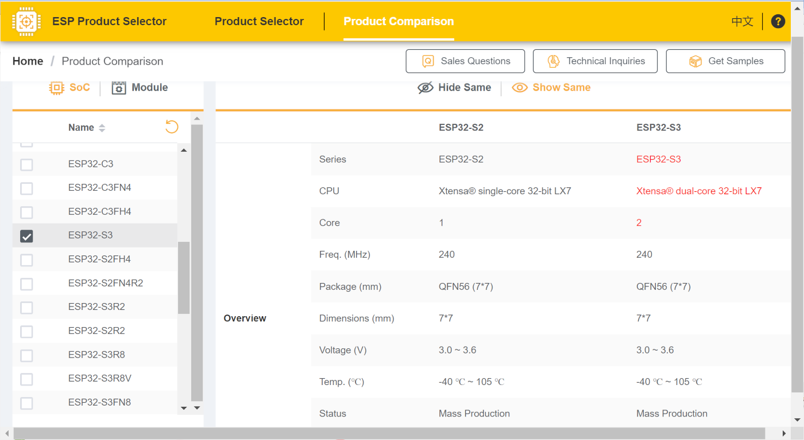
รูป:การเปรียบเทียบระหว่าง ESP32-S2 และ ESP32-S3 บนหน้าเว็บไซต์ของบริษัท Espressif Systems
▷ การจำแนกประเภทของบอร์ด ESP32-S3 และตัวอย่างบอร์ดทดลอง#
บริษัท Espressif Systems ได้จำแนกฮาร์ดแวร์ออกเป็น 3 กลุ่ม หรือ 3 ระดับ คือ
- SoC หมายถึง ตัวชิปของบริษัท และมีตัวถังของไอซีเป็นแบบ QFN
- Module หมายถึง โมดูล PCB ที่มีชิป ESP32 Chip รวมถึงไอซีหน่วยความจำ วงจรสร้างความถี่ ฝาครอบที่เป็นโลหะป้องกันการรบกวนสัญญาณ (RF Shield Metal Cover) และสายอากาศ (PCB Trace Antenna) หรือ คอนเนกเตอร์สำหรับต่อสายอากาศภายนอก
- Board หมายถึง บอร์ดไมโครคอนโทรลเลอร์ที่ใช้ชิปของ Espressif
แนวทางการจำแนกบอร์ด ESP32-S3 มีดังนี้
- จำแนกตามการใช้งานโมดูล เช่น ESP32-S3-WROOM-1 หรือ ESP32-S3-MINI-1
- จำแนกตามขนาดความจุของหน่วยจำ (ภายในหรือภายนอก) ทั้งประเภท SPI Flash และ SPI PSRAM
- จำแนกตามจำนวนพอร์ต USB เช่น ใช้คอนเนกเตอร์ USB-Type C หรือ MicroUSB
- จำแนกตามการใช้งานชิปหรือวงจร USB-to-Serial Bridge Chip หรือ ไม่มี
- จำแนกตามขนาดของบอร์ด และการใช้งานร่วมกับเบรดบอร์ด
- จำแนกตามลักษณะการใช้งาน เช่น การเพิ่มโมดูลจอแสดงผล TFT IPS Touch Screen หรือ Camera Module เป็นต้น
ตัวอย่างบอร์ด ESP32-S3
- Espressif ESP32-S3-DevKitC-1 (ESP32-S2-WROOM-1)
- Espressif ESP32-S3-DevKitM-1 (ESP32-S3-MINI-1)
- YD-ESP32-S3 Core Board (N16R8)
- Banana Pi BPI-PicoW ESP32-S3
- Cytron.io Maker Feather AIoT S3
- Unexpected Maker Boards (ProS3 | FeatherS3 | TinyS3 | NanoS3)
- MakerFabs ESP32-S3 Parallel 1.9" TFT with Touch
- Olimex ESP32-S3-DevKit-LiPo
- Wemos.cc Lolin S3 Pro
- Wemos.cc Lolin S3 Mini
- SeeedStudio Xiao ESP32S3 (Sense)
- WaveShare ESP32-S3-Zero (ESP32-S3FH4R2)
- WaveShare ESP32-S3-Pico
- WaveShare ESP32-S3-DevKit
- Ai-Thinker NodeMCU-ESP-S3-12K-Kit
- ESP32S3-Luatos-Core
- WeAct Studio ESP32-S3-A
- WeAct Studio ESP32-S3-B
- ESP32-S3 4.3inch Capacitive Touch Display
- Adafruit Adafruit QT Py ESP32-S3
- FreeNove ESP32-S3 WROOM-1 + Camera
- M5Stack AtomS3 Lite
- Arduino Nano ESP32 (u-blox NORA-W106 Module with ESP32-S3)
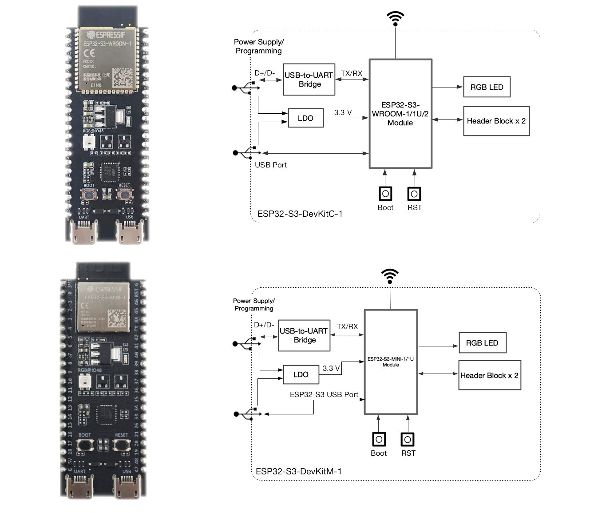
รูป: Espressif ESP32-S3-DevKitC-1 และ ESP32-S3-DevKitM-1
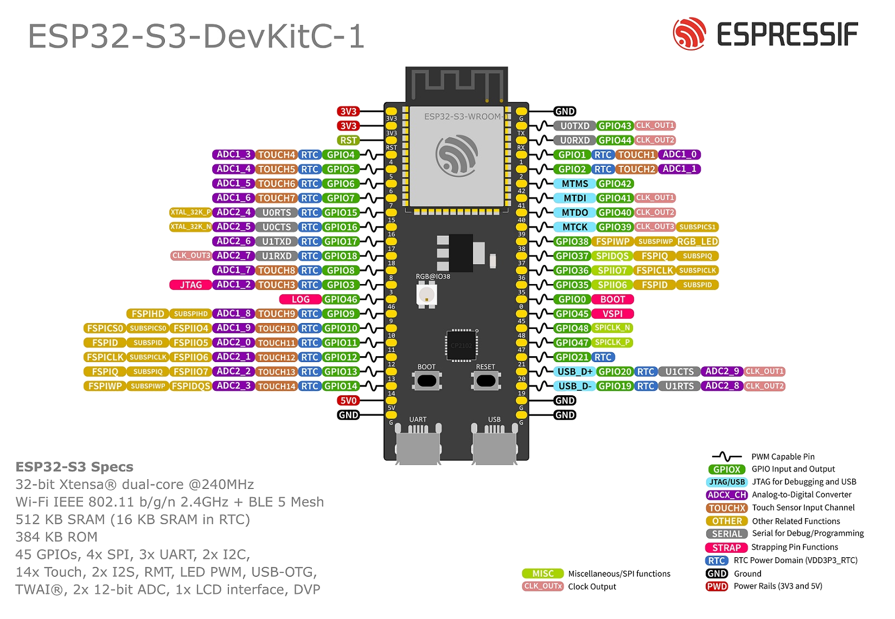
รูป: Espressif ESP32-S3-DevKitC-1 Pinout
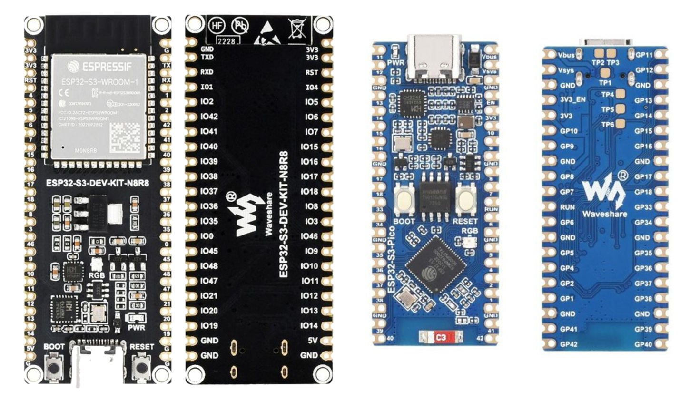
รูป: บอร์ดของบริษัท WaveShare: ESP32-S3 DevKit vs. ESP32-S3 Pico
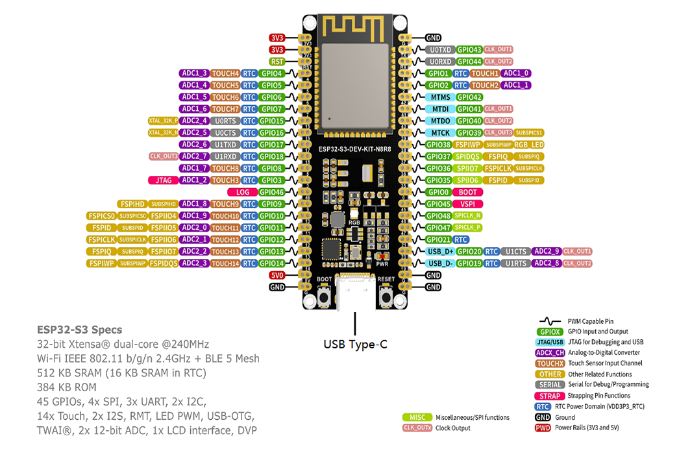
รูป: Waveshare ESP32-S3 DevKit WROOM-1 Pinout
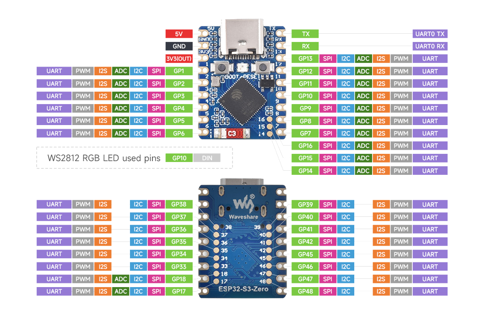
รูป: Waveshare ESP32-S3 Zero Pinout
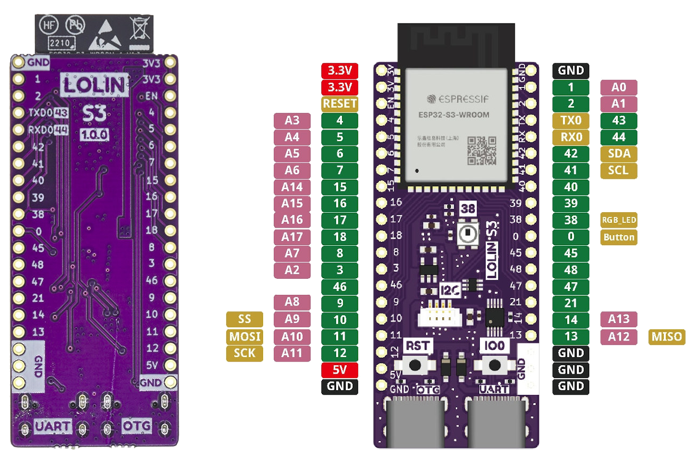
รูป: Wemos Lolin S3 Pro Pinout
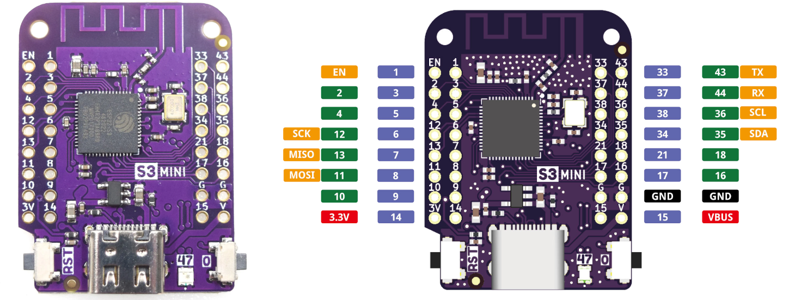
รูป: Wemos Lolin S3 Mini Pinout
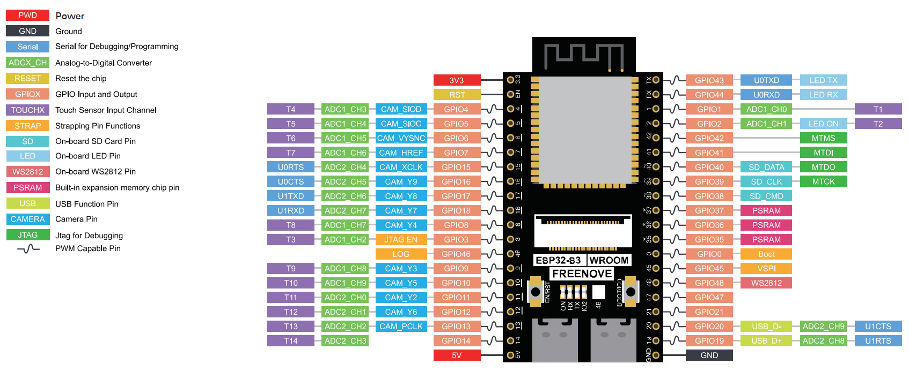
รูป: Freenove ESP32-S3 WROOM-1 Pinout
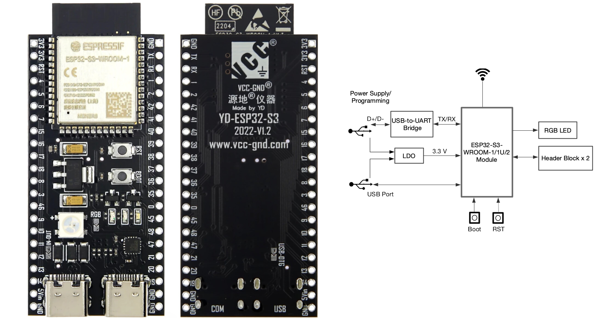
รูป: VCC-GND Studio YD-ESP32-S3 Core
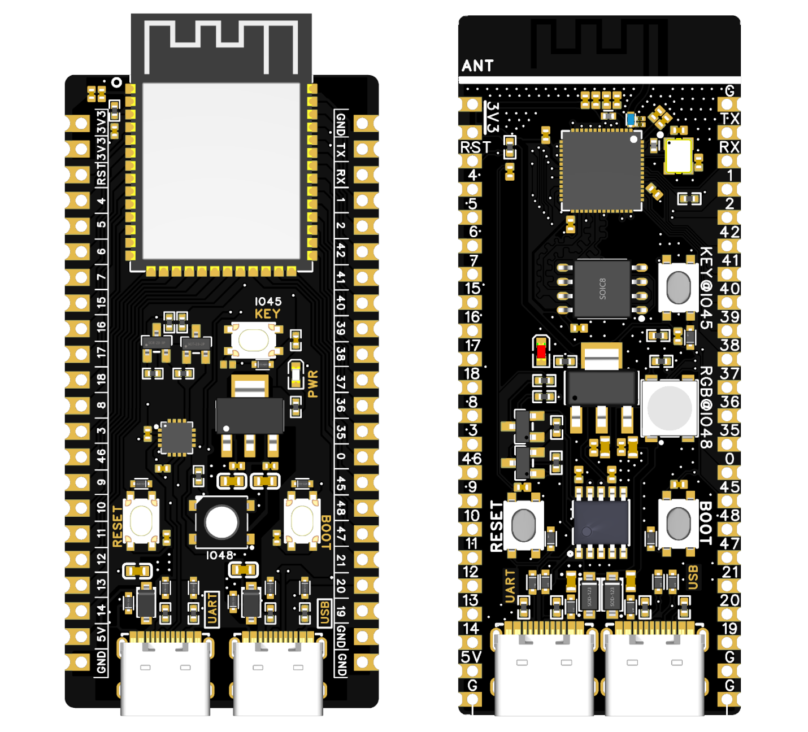
รูป: WeAct Studio ESP32-S3 Core A and B
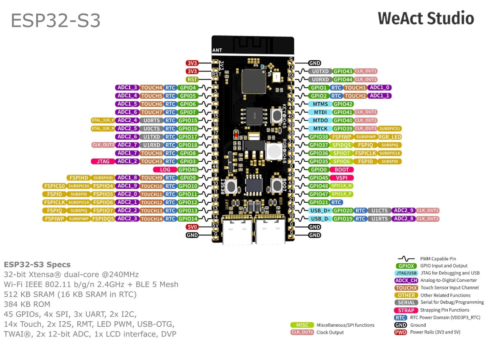
รูป: WeAct Studio ESP32-S3 Core B Pinout
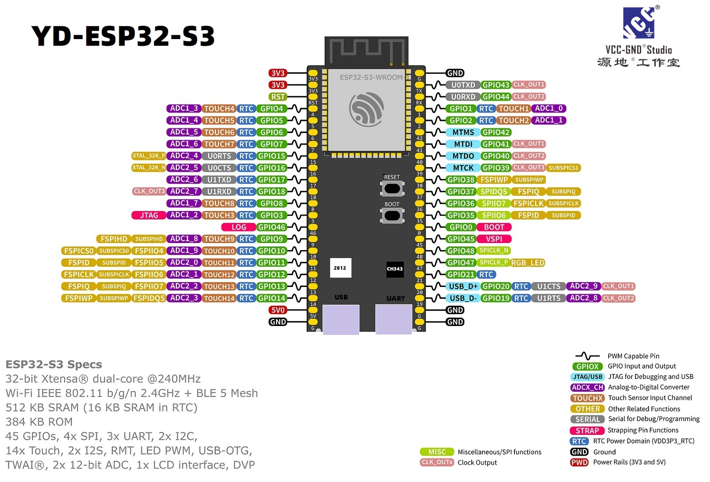
รูป: VCC-GND Studio YD-ESP32-S3 Core Pinout
บอร์ด Waveshare ESP32-S3-Pico (Schematic) มีคุณสมบัติดังนี้
- ชิป: ESP32-S3R2 (External Flash, built-in PSRAM)
- หน่วยความจำ External Flash: 16MB (W25Q128)
- หน่วยความจำ On-chip PSRAM: 2MB
- มีพอร์ต USB Type-C เพียงหนึ่งพอร์ต รองรับการใช้งาน Full-speed USB OTG
- มีไอซี CH343 USB-to-Serial Bridge
- มีไอซี CH334 USB Hub IC
- มีไอซี MP28164 (DC-DC Buck-Boost Switching Converter) จ่ายกระแสได้สูงถึง 2A @ 3.3V
- มีสายอากาศแบบ Ceramic Antenna
- มีไอซี WS2812B (GPIO21)
▷ ตัวเลือกในการเขียนโปรแกรมสำหรับ ESP32-S3#
ตัวเลือกในการเขียนโปรแกรมสำหรับ ESP32-S3 ก็เหมือน ESP32 Series ในรุ่นอื่น ๆ ได้แก่
- Espressif IDE + Espressif IDF
- Arduino IDE + Arduino ESP32 Core
- VS Code IDE + PlatformIO + Arduino-ESP32 Framework
- Python: MicroPython, CircuitPython
- Rust
- ...
ตัวอย่าง Tutorials โดยผู้พัฒนาบอร์ด
- Get started with Arduino (ESP32-S3) by Wemos.cc
- Get started with MicroPython (ESP32-S3) by Wemos.cc
- Getting started with CircuitPython (XIAO ESP32-S3) by SeeedStudio
- Wiki for ESP32-S3-DEV-KIT-N8R8 by WaveShare
- Getting Started with Maker Feather AIoT S3 using CircuitPython by Cytron.io
▷ การเขียนโปรแกรมด้วย Arduino#
การเขียนโค้ด Arduino Sketch แนะนำให้ติดตั้งและใช้งาน Arduino IDE จากนั้นจึงติดตั้ง Arduino ESP32 Board Manager
- Stable release:
https://raw.githubusercontent.com/espressif/arduino-esp32/gh-pages/package_esp32_index.json - Development release:
https://raw.githubusercontent.com/espressif/arduino-esp32/gh-pages/package_esp32_dev_index.json
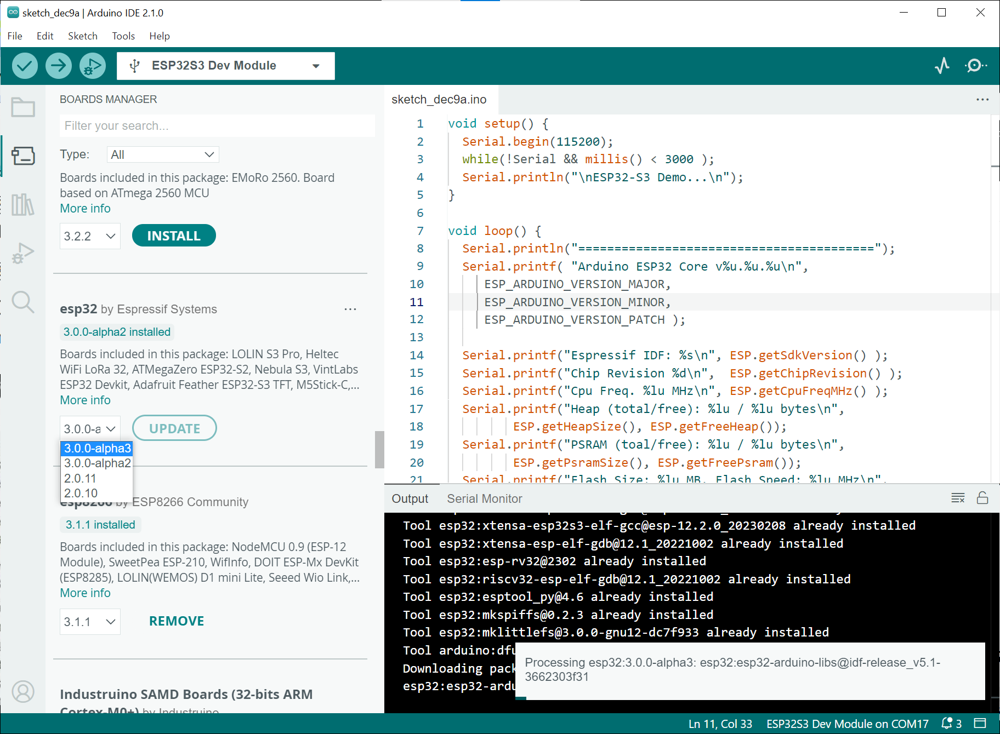
รูป: การติดตั้ง Arduino ESP32 Core v3.0.0
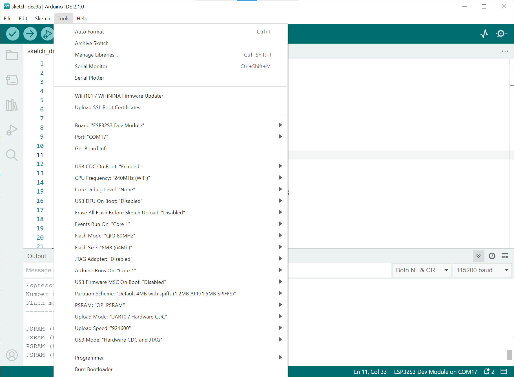
รูป: ตัวอย่างการตั้งค่าอุปกรณ์ก่อนการคอมไพล์และอัปโหลดเฟิร์มแวร์
โค้ดตัวอย่าง Arduino Sketch สาธิตการตรวจสอบข้อมูลเกี่ยวกับฮาร์ดแวร์และซอฟต์แวร์ที่ใช้งาน มีดังนี้
void setup() {
Serial.begin(115200);
while(!Serial && millis() < 3000 );
Serial.println("\nESP32-S3 Demo...\n");
}
void loop() {
Serial.println("=========================================");
Serial.printf( "Arduino ESP32 Core v%u.%u.%u\n",
ESP_ARDUINO_VERSION_MAJOR,
ESP_ARDUINO_VERSION_MINOR,
ESP_ARDUINO_VERSION_PATCH );
Serial.printf("Espressif IDF: %s\n", ESP.getSdkVersion() );
Serial.printf("Chip Revision %d\n", ESP.getChipRevision() );
Serial.printf("Cpu Freq. %lu MHz\n", ESP.getCpuFreqMHz() );
Serial.printf("Heap (total/free): %lu / %lu bytes\n",
ESP.getHeapSize(), ESP.getFreeHeap());
Serial.printf("PSRAM (toal/free): %lu / %lu bytes\n",
ESP.getPsramSize(), ESP.getFreePsram());
Serial.printf("Flash Size: %lu MB, Flash Speed: %lu MHz\n",
ESP.getFlashChipSize()/(1024*1024UL),
ESP.getFlashChipSpeed()/(uint32_t) 1e6 );
// more info...
Serial.printf("Espressif chip model: %s\n",
ESP.getChipModel() );
Serial.printf("Number of CPU Cores: %d\n",
ESP.getChipCores() );
String str;
switch(ESP.getFlashChipMode()) {
case FM_QIO: str = "QIO"; break;
case FM_QOUT: str = "QOUT"; break;
case FM_DIO: str = "DIO"; break;
case FM_DOUT: str = "DOUT"; break;
default: str = "Unknown"; break;
}
Serial.printf("Flash model: %s\n", str.c_str() );
Serial.println("=========================================\n");
const uint32_t N = 10000;
uint32_t *buf = (uint32_t*)ps_malloc(N*sizeof(uint32_t) );
if (buf != NULL) {
Serial.printf("PSRAM (toal/free): %lu / %lu bytes\n",
ESP.getPsramSize(), ESP.getFreePsram());
free( buf );
Serial.printf("PSRAM (toal/free): %lu / %lu bytes\n",
ESP.getPsramSize(), ESP.getFreePsram());
}
struct PsramAllocator {
void* allocate(size_t size) {
return ps_malloc(size);
}
void deallocate(void* pointer) {
free(pointer);
}
};
PsramAllocator psramAllocator;
uint32_t n_bytes = N*sizeof(uint32_t);
// Try to allocate memory in PSRAM.
uint32_t *psram = (uint32_t *)psramAllocator.allocate( n_bytes );
Serial.printf("PSRAM (toal/free): %lu / %lu bytes\n",
ESP.getPsramSize(), ESP.getFreePsram());
// Release the allocated PSRAM memory.
psramAllocator.deallocate(psram); // Deallocate the PSRAM memory
Serial.printf("PSRAM (toal/free): %lu / %lu bytes\n",
ESP.getPsramSize(), ESP.getFreePsram());
delay(4000);
}
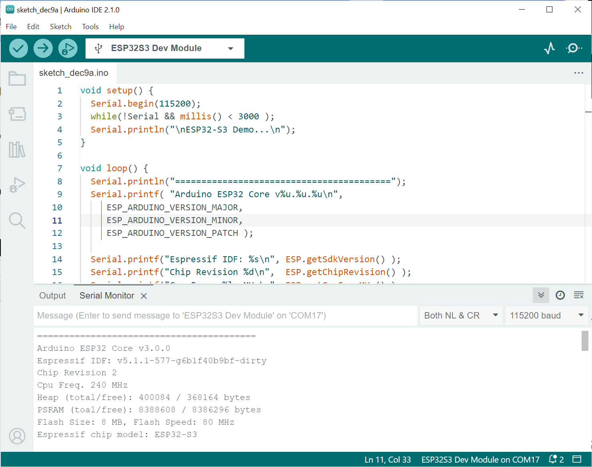
รูป: ตัวอย่างข้อความเอาต์พุต
▷ การเขียนโปรแกรมด้วย MicroPython#
ESP32-S3 มีเฟิร์มแวร์ที่เรียกว่า ROM Bootloader อยู่ภายในหน่วยความที่อ่านได้เท่านั้น และสามารถทำให้เข้าสู่โหมด Bootloader ได้โดยการกดปุ่ม BOOT ค้างไว้ และกดปุ่ม RESET แล้วปล่อย จะทำให้มองเห็น USB JTAG / Serial Port สำหรับคอมพิวเตอร์ของผู้ใช้
เมื่อชิปอยู่ในโหมด Bootloader แล้ว ก็สามารถใช้โปรแกรม เช่น esptool.py (Python-based) หรือ Espressif Flash Download Tools หรือ Espressif Web-based Esptool.js อัปโหลดไฟล์เฟิร์มแวร์ไปยังบอร์ดได้
การติดตั้ง esptool.py สำหรับ Ubuntu (สำหรับ Windows ก็ทำคำสั่งในลักษณะเดียวกัน)
$ pip install esptool
คำแนะนำ: แต่ถ้าใช้ซอฟต์แวร์ Thonny IDE
สำหรับการเขียนโค้ด การติดตั้งไฟล์เฟิร์มแวร์สำหรับ
MicroPython จะทำได้ง่ายกว่าการใช้คำสั่ง esptool.py
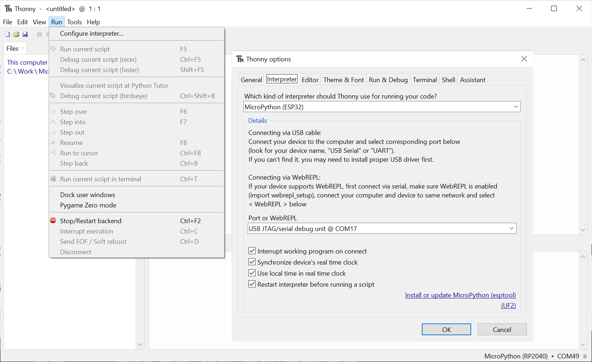
รูป: การติดตั้ง MicroPython Firmware โดยใช้ Thonny IDE
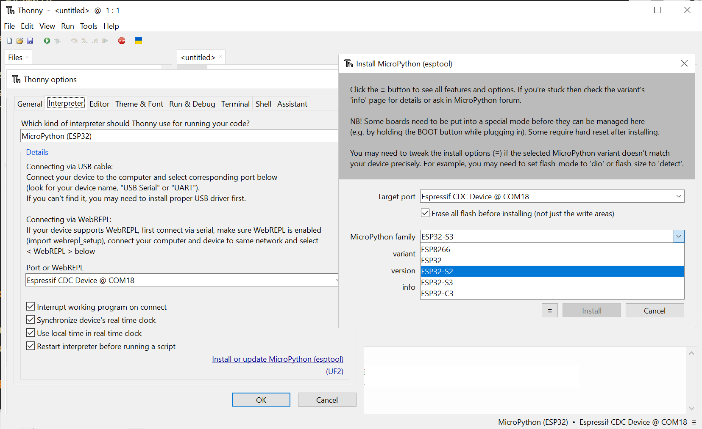
รูป: การเลือกไฟล์ MicroPython Firmware สำหรับบอร์ด ESP32S3 ที่จะใช้งาน
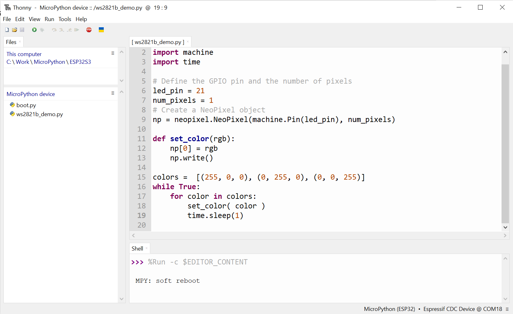
รูป: ตัวอย่างการเขียนและรันโค้ด MicroPython เพื่อเปลี่ยนสีของ WS2812B RGB LED (GPIO-21) บนบอร์ด ESP32-S3
คำสั่งของ MicroPython API สำหรับ ESP32 สามารถดูตัวอย่างการใช้งานได้จาก Quick reference for the ESP32
import neopixel
import machine
import time
# Define the GPIO pin and the number of pixels
led_pin = 21
num_pixels = 1
# Create a NeoPixel object
np = neopixel.NeoPixel(machine.Pin(led_pin), num_pixels)
def set_color(rgb):
np[0] = rgb
np.write()
colors = [(255,0,0), (0,255,0), (0,0,255)]
while True:
for color in colors:
set_color( color )
time.sleep( 1 )
ตัวอย่างโค้ดสาธิตการแสดงข้อมูลเกี่ยวกับ MicroPython และฮาร์ดแวร์ที่ใช้งาน
import esp
import sys
import machine
import uos
import network
# Print MicroPython version
print("\n\nMicroPython version:", sys.version)
names = ['sysname','nodename',
'release','version','machine']
sys_info = dict(zip(names,uos.uname()))
for n,v in sys_info.items():
print( "{:>10s}: '{}'".format(n,v) )
# Print system information
print("System info:")
print("- Flash size:", esp.flash_size(), "bytes")
print("- Free heap:", gc.mem_free(), "bytes")
print("- Frequency:", int(machine.freq()/(1e6)), "MHz")
id = machine.unique_id()
mac_address = ':'.join([hex(b)[2:].upper() for b in id])
print("- MAC address:", mac_address)
wlan_sta = network.WLAN(network.STA_IF)
wlan_sta.active(True)
wlan_mac = wlan_sta.config('mac')
mac_address = ':'.join([hex(b)[2:].upper() for b in wlan_mac])
print("- MAC address:", mac_address)
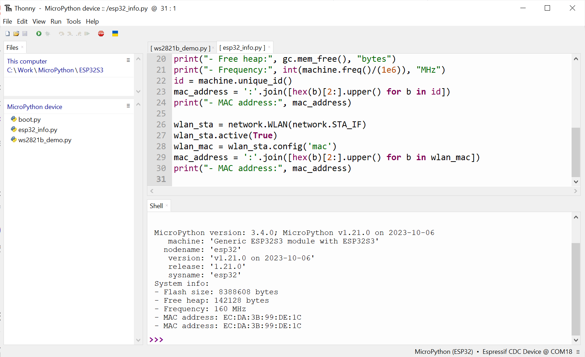
รูป: ตัวอย่างการรันโค้ด MicroPython
▷ การเขียนโปรแกรมด้วย CircuitPython#
ถ้าต้องการติดตั้งเฟิร์มแวร์สำหรับ CircuitPython มี 2 ทางเลือก
- ดาวน์โหลดไฟล์ .bin ให้ตรงกับบอร์ดที่ต้องการใช้งาน และใช้คำสั่ง esptool.py อัปโหลดไฟล์ไปยังบอร์ด เช่น บอร์ด Feather ESP32-S3 No PSRAM
- ใช้ไฟล์ประเภทที่เรียกว่า UF2 firmware (.uf2) แต่จะต้องมีการติดตั้ง
Tiny UF2 Bootloader firmware
(ชื่อไฟล์
tinyuf2.bin) จัดทำโดยบริษัท Adafruit แล้วจึงติดตั้งไฟล์ .uf2 ในขั้นถัดไป
ตัวอย่างการติดตั้งไฟล์ .bin เช่น สำหรับบอร์ด ESP32-S3 ที่ไม่มี PSRAM
File: adafruit-circuitpython-adafruit_feather_esp32s3_nopsram-en_US-8.2.9.bin
ตัวอย่างการทำคำสั่ง esptool.py
โดยไม่จำเป็นต้องระบุชื่อ Serial Port ถ้ามีบอร์ด ESP32 เชื่อมต่ออยู่เพียงบอร์ดเดียว
และทำให้บอร์ดเข้าสู่โหมด USB Bootloader ก่อนเริ่มทำคำสั่ง
คำสั่งสำหรับ Ubuntu
## For Ubuntu Bash Shell
# Erase flash
$ esptool.py --chip esp32s3 erase_flash
# Write the Flash with a single .bin file
$ esptool.py --chip esp32s3 \
--before=default_reset --after=no_reset write_flash \
--flash_mode dio --flash_size detect --flash_freq 80m 0x0 \
adafruit-circuitpython-adafruit_feather_esp32s3_nopsram-en_US-8.2.9.bin
คำสั่งสำหรับ Windows
## For Windows Commands Shell
# Erase flash
> esptool.py --chip esp32s3 erase_flash
# Write the Flash with a single .bin file
> esptool.py --chip esp32s3 ^
--before=default_reset --after=no_reset write_flash ^
--flash_mode dio --flash_size detect --flash_freq 80m 0x0 ^
adafruit-circuitpython-adafruit_feather_esp32s3_nopsram-en_US-8.2.9.bin
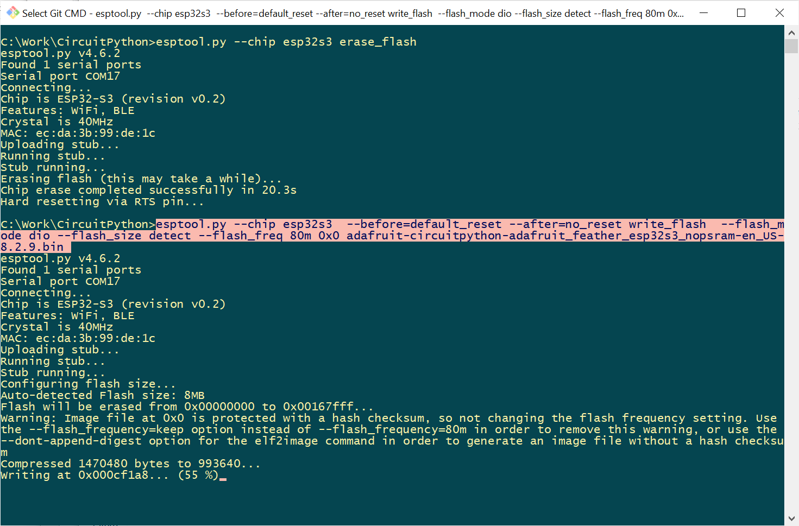
รูป: ตัวอย่างการทำคำสั่ง esptool.py
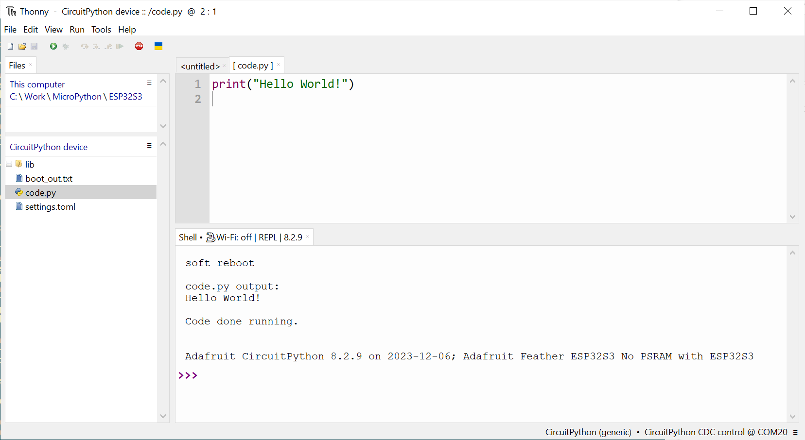
รูป: การเชื่อมต่อจาก Thonny IDE ไปยังบอร์ด ESP32-S3 ได้สำเร็จ
ตัวอย่างการติดตั้งไฟล์เฟิร์มแวร์แบบหลายไฟล์ (ไฟล์ .bin มีอยู่หลายไฟล์ รวมไว้ในไฟล์ .zip ดังนั้นให้แตกไฟล์ในไดเรกทอรีใหม่ก่อน) เช่น สำหรับบอร์ด ESP32-S3 ที่ไม่มี PSRAM
File: tinyuf2-adafruit_feather_esp32s3_nopsram-0.18.1.zip
การทำคำสั่งด้วย esptool.py (สำหรับ Ubuntu)
# Erase flash
$ esptool.py --chip esp32s3 erase_flash
# Write the Flash with multiple files
$ esptool.py --chip esp32s3 \
--before=default_reset --after=no_reset write_flash \
--flash_mode dio --flash_size detect --flash_freq 80m \
0x0 bootloader.bin \
0x8000 partition-table.bin \
0xe000 ota_data_initial.bin \
0x410000 tinyuf2.bin
เมื่อได้ติดตั้ง TinyUF2 Bootloader สำหรับบอร์ด ESP32-S3 ได้สำเร็จแล้ว จะมองเห็น TinyUF2 CDC ของบอร์ด ได้จากการใช้งาน Thonny IDE แต่ถึงขั้นตอนนี้ ยังไม่ได้มีการติดตั้ง CircuitPython ดังนั้นขั้นตอนถัดไป ก็เป็นการติดตั้งหรืออัปเดตเฟิร์มแวร์สำหรับ CircuitPython
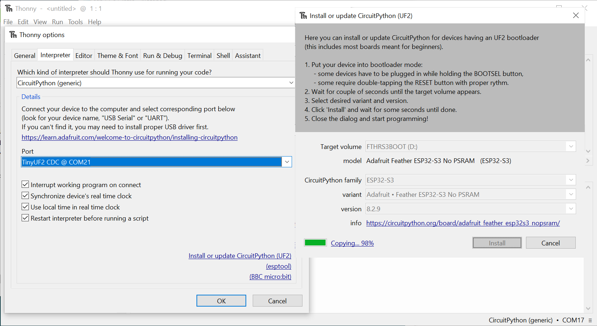
รูป: การติดตั้งหรืออัปเดตเฟิร์มแวร์สำหรับ CircuitPython
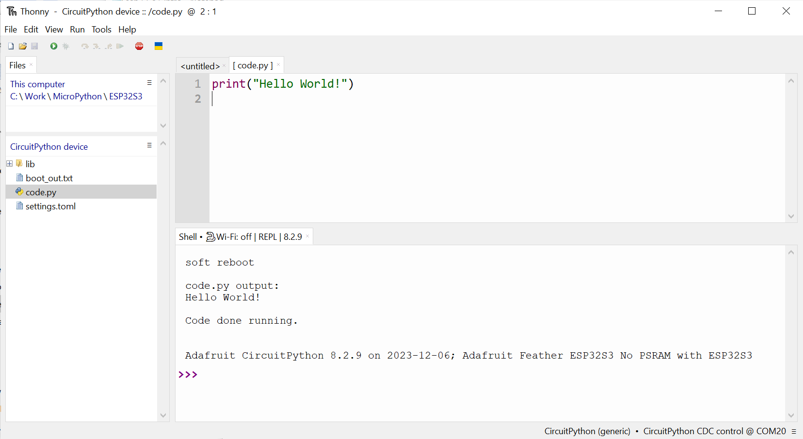
รูป: การเชื่อมต่อจาก Thonny IDE ไปยังบอร์ด ESP32-S3 ได้สำเร็จ
▷ การใช้งาน WokWi Simulator#
Wokwi Simulator รองรับการใช้งาน ESP32-S3 สำหรับการเขียนโปรแกรมด้วยภาษา C/C++ โดย Arduino-ESP32 Core และภาษา Rust
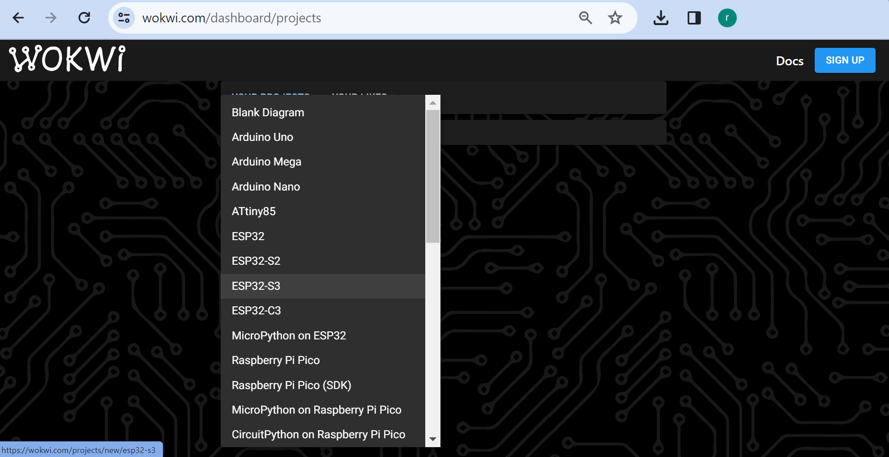
รูป: การเลือกบอร์ด Espressif ESP32-S3-DevKitC-1 ใน Wokwi Simulator สำหรับการเขียนโปรแกรมด้วย Arduino ESP32
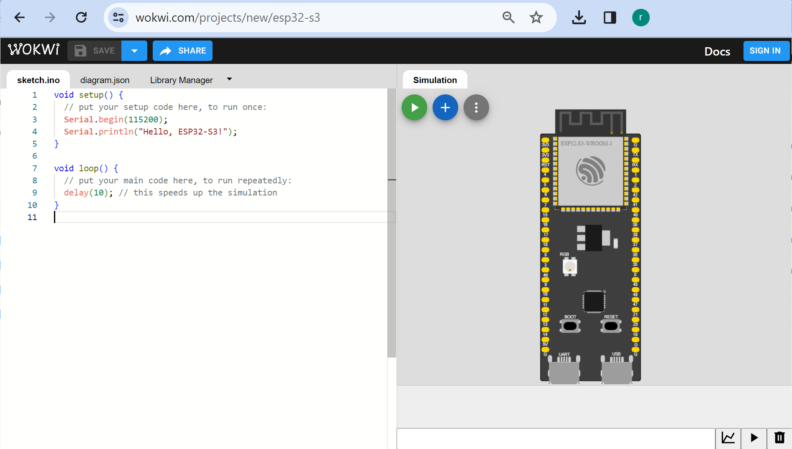
รูป: การเขียนโค้ด Arduino Sketch และจำลองการทำงานโดยใช้บอร์ด Espressif ESP32-S3-DevKitC-1
▷ กล่าวสรุป#
บทความนี้ได้นำเสนอแนวทางการใช้งานบอร์ด ESP32-S3 ในเบื้องต้น ตัวเลือกสำหรับซอฟต์แวร์และการเขียนโปรแกรม เช่น Arduino ESP32 และภาษา MicroPython / CircuitPython
This work is licensed under a Creative Commons Attribution-ShareAlike 4.0 International License.
Created: 2023-12-09 | Last Updated: 2023-12-09